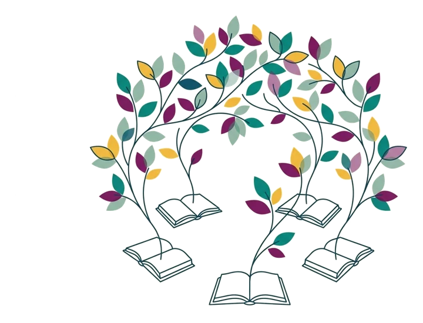

Forgiveness Groups
Doing this work alongside other people changes it
A Forgiveness Group is six to twelve people working through the REACH Forgiveness Workbook on their own, then meeting to talk about the experience. Each meeting is guided by a short video, so you don’t need to be a therapist or an expert to facilitate one — we provide the films, the guidance, and the materials.
Create your facilitator account Create a group How facilitating works
What happens in a Forgiveness Group

Each person is on their own forgiveness journey, and not everyone will reach full emotional forgiveness. That’s okay. If you ever need to pause or stop, you should. The guidelines below carry the rest, and they hold for every group.
Forgiveness Group Guidelines
These eight hold for every group, whichever version you use. Read them out at your first meeting.
Facilitating a group
Four things to get right. None of them needs training.
Choose your format
Three sessions using the REACH Forgiveness Workbook, or six using the church edition.
Gather 6–12 people
A church small group, a class, a workplace team, or friends.
Everyone gets the workbook
Free PDF or print. Everyone does their lessons on their own, before each meeting.
Press play, then talk
Watch the short video together, then discuss what it raises. The video carries the structure so you don’t have to.
A facilitator guide and a short film on running a session are in production and will appear in your account. Coming with the videos
Video-guided
The two versions
Each version is a set of films. At each meeting the facilitator plays that session’s video — about ten minutes of teaching and a guided activity — and the group talks afterwards. Choose the one that matches your workbook: three sessions for the REACH Forgiveness Workbook, six sessions for the REACH Forgiveness Workbook, Adapted for Churches.
Both are ways of getting a group through the tested workbook — the evidence attaches to the workbook, and both versions inherit it. The lessons listed against each session are the ones your group completes before that meeting.
Choose one to see it step by step.
Create your group
Pick your version and we’ll issue your group code straight away — that is the only answer we need. Once you have it, you can tell us a little more if you like: it helps us support you and understand where this work is taking root.
Free account
Sign in first — everything you need is in there
Your account holds your group code, the session videos, the facilitator guide, and the interactive workbook. It is free, it takes a minute, and you can delete it whenever you like.
Not ready for an account? The workbook itself never needs one — download it here and come back when you are.
Connect with other practitioners
Monthly · Free
Forgiveness Community of Practice
Learn about forgiveness research and implementation best practice, and connect with others spreading forgiveness. First Friday of every month, 12pm ET, on Zoom.
Register